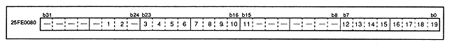

Figure 3.14 shows the details of the DSP program control port.
Figure 3.14 DSP program control port (register: PPAF) Initial value 00000000H

Pause release flag (1 [bit 26] in Figure 3.14) PR (W) execute Pause Reset flag
When the program execution control flag (see below) is 1, writing 1 to this flag will release the suspended program and start executing. If it is not paused or the program execution flag is 0, the status will not change.
Pause flag (2 [bit 25] in Figure 3.14) EP (W) Execute Pause flag
When the program execution control flag (see below) is 1, writing 1 to this flag causes the running program to pause. The state does not change when it is paused or when the program execution flag is 0.
D0-Bus DMA execution flag (3 [bit 23] in Figure 3.14) T0 (R) Transfer 0
This flag is set to 1 when DMA is executed using D0-Bus.
Sign flag (4 [bit 22] in Figure 3.14) S (R) Sign flag
This flag is set to 1 when the operation result is negative.
Zero flag (5 [bit 21] in Figure 3.14) Z (R) Zero flag
This flag is set to 1 when the calculation result is 0.
Carry flag (6 [bit 20] in Figure 3.14) C (R) Curry flag
This flag is set to 1 when a carry occurs in the operation result.
Overflow flag (7 [bit 19] in Figure 3.14) V (R) oVerflow flag
This flag is set to 1 when the operation result overflows (or underflows). This flag is reset by reading.